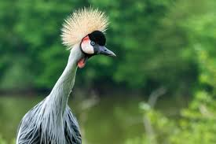

A small blurb on our lovely birds
Bacon ipsum dolor amet chicken picanha turducken, short loin rump ribeye meatloaf. Short ribs tongue flank ground round, salami jowl ham fatback. Beef ribs pork loin kevin jerky shank venison cupim turkey shankle burgdoggen. Corned beef shank kielbasa drumstick rump tri-tip prosciutto pork chop.
Post Tags
- feathers
- birds
- talons